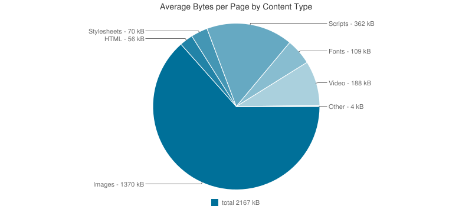

Responsive Images
And Beyond!
What is Responsive images?
Efficiently load properly dimensioned images that fit the page's design
Mobile Web
Mobile Web
And then
RWD
- Media Queries
- Fluid grids
- Flexible images
"Flexible images???"
"That's easy"
"Just send the largest possible image"
"And let the browser resize it"
All done!!!
BLOAT!!!
72% Serve same resources

Images - over 63%

Up to 72% can be saved

data plan abuse
wasted time
People demanded a solution
Turned to the mailing lists

Proposals!

Y U NO MEDIA ATTR
Moar proposals!
Y U NO CSS
And MOAR!!!
Y U NO JS
<picture> proposal
srcset proposal
Picture vs. srcset!
Picture *and* srcset
Browsers weren't convinced
9 months later
Src-N
Moar proposals???
Y U NO *
Back to picture
Mozilla were positive
Blink tho
So, crowdfunding to the rescue
Patches got landing
{kind=link}
Shipped in Chrome 38
A group effort

Now what?
Replicating that model
Why change?
Problem
Specification
Implementation
Why?
The Web
Billions of users
Millions of devs
100s of implementors
Tragedy of the commons
What can we do?
How?
Overwhelm
WICG
Extensible Web
The Web is ours!
Join
bit.ly/webincubatorFollow
@wicg_Discuss
discourse.wicg.ioThank you!
@yoavweiss on Twitter & GitHub